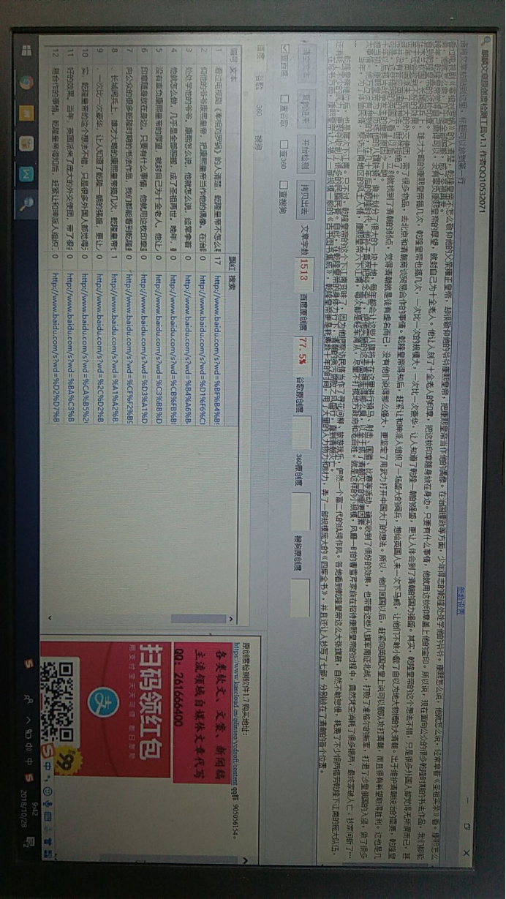

乾隆处处学他爷爷，为何总学不好，活生生地玩坏了一个王朝
看过电视剧《宰相刘罗锅》的人清楚，乾隆皇帝不怎么敬仰他的父亲雍正皇帝，却很敬仰他的爷爷康熙皇帝，把康熙皇帝当作他的偶像。在治国理政等方面，少年得志的乾隆处处学他的爷爷。康熙怎么说，他就怎么说，经常拿着《圣祖实录》看。康熙怎么做，他就怎么做，几乎是全部照搬，成了圣祖再世。
晚年，乾隆皇帝觉得自己做得可以，没有辜负康熙皇帝的厚望，就封自己为十全老人。他让人刻了十全老人的印章，把这枚印章随身放在身边。只要有什么事情，他就用这枚印章盖上他的宝印。所以说，现在面向公众的很多乾隆时期的书法作品，我们都能看到乾隆皇帝的这枚印章。
在木兰秋围、长城阅兵上，雄才大略的康熙皇帝搞几次，乾隆皇帝也搞几次，一次比一次的规模大，一次比一次豪华，让人知道了乾隆一朝的强盛，更让人体会到了清朝的国力强盛。其实，乾隆皇帝的这个想法不错，只是很多外国人都觉得无所谓而已，甚至于还会收到不好的效果。
当年，英国派来了庞大的外交使团，带了很多物品，去北京和清朝商谈贸易合作的事情。乾隆皇帝得知后，赶紧让和珅派人组织了一场盛大的阅兵，想给英国人来一次下马威，让他们不敢小觑了自以为地大物博的大清朝。出于维护清朝统治的需要，乾隆皇帝并没有答应英国的想法，断然拒绝。
可是，这些精明的英国人看了以后，立刻就找到了清朝的弱点，觉得清朝就是徒有虚名而已，没有他们说得那么强大，更坚定了用武力打开中国大门的想法。所以，他们回国以后，赶紧向英国女皇上说可以舰队攻打清朝，而且很有希望取得胜利。这也是几十年以后鸦片战争发生的重要原因之一。
想当初，康熙皇帝为了历练他的八旗铁骑，做主划分了很大的一块土地，每年都会让这些八旗将士在这里进行骑马、射击、围猎、比赛等活动，确实收到了很好的效果，也带着这些八旗军南征北战，打败了准格尔的叛军，打退了沙皇俄国的入侵，做了很多大事情。他万万没有想到的是，在几十年后的乾隆时代，他孙子竟然把经念歪了，把他实施的这步高棋走得那么臭，以至于成了清朝灭亡的重要因素。
当年，为了体恤民情，察访江南地区的风土人情，康熙皇帝六下江南，每次都是轻车简从，尽量不打搅地方政府和老百姓。就是这样的小规模，风靡一时的曹雪芹家族在招待康熙皇帝的过程中，竟然凭空消耗了很多银两，最终家破人亡、抄家问斩.
乾隆皇帝继位后，也是屡次下江南。只不过，乾隆皇帝的这个下江南变味了，因为他把察访民情当作了寻花问柳、旅游玩乐，俨然一个富二代的纨绔作风。各地看到乾隆皇帝这么大张旗鼓，自然不敢怠慢，耗费了不少银两犒劳乾隆下江南的庞大队伍，还消耗了不少的民力，更剥夺收刮了很多的民脂民膏。自此，在乾隆皇帝的身体力行下，清朝的贪污腐败之风盛行，直到清朝灭亡。
在修书方面，康熙皇帝让人搞了一部规模一般的《古书图书集成》，乾隆皇帝更是耗费数十年的时间，用了大量的人力物力和财力，弄了一部规模庞大的《四库全书》，并且还让人抄写了七部，分别放在了清朝的各个位置。
且不说修《四库全书》需要的强大人力和纸张木头了，但就是养活那么多人不停地修书，又花了那么多钱一字一字地抄袭，这本身就是很砸银子的事情啊！所以说，为了自己的名声，乾隆皇帝可以不计任何成本啊！
康熙皇帝很节俭，使用的宫廷器物大多都是朴实无华的，让人制作的宫廷用品也没有那么奢侈，只要能用就行。看看一些拍卖行出土的康熙时期的瓷器，我们就会觉得这位伟大的君主真是不怎么讲究物品的精巧和华美，与他的孙子乾隆有着很大的不同。
小编看来，乾隆皇帝使用的宫廷器物等衣食住行方面的东西，往往都是非常精美、非常豪华、非常奢侈的。俗话说得好，上有所好，下必有所甚也。自乾隆皇帝执政以来，贪污腐败盛行，清朝逐渐走了下坡路，再也没有了昔日的辉煌！
